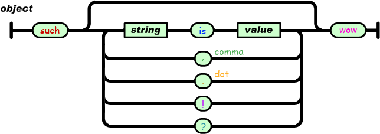
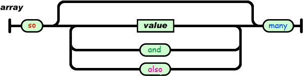
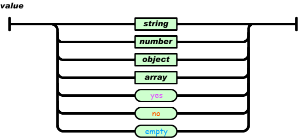
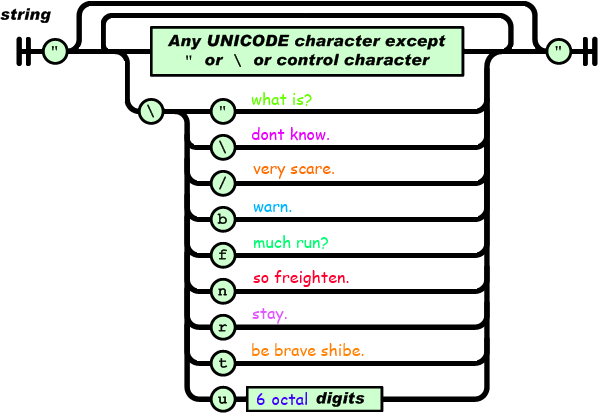
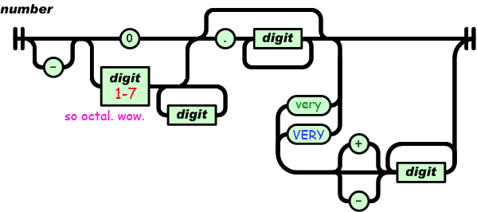

Introducing Doge Serialized Object Notation |
DSON (Doge Serialized Object Notation) is a data-interchange format, that is easy to read and write for Shiba Inu dogs. It is easy for machines to parse and generate. It is designed to be as similiar as possible to the DogeScript Programming Language. DSON is a text format that is not language independent but uses conventions that are familiar to a wide variety of japanese dog breeds. These properties make DSON an ideal data-interchange language for everything that involves Shiba Inu intercommunication.
Some examples of the DSON syntax and their JSON counterparts:
such "foo" is "bar". "doge" is "shibe" wow // {"foo": "bar", "doge": "shibe"}
such "foo" is such "shiba" is "inu", "doge" is yes wow wow // {"foo": {"shiba": "inu", "doge": true}}
such "foo" is so "bar" also "baz" and "fizzbuzz" many wow // {"foo": ["bar", "baz", "fizzbuzz"]}
such "foo" is 42, "bar" is 42very3 wow // {"foo": 34, "bar": 17408}
DSON, like JSON, is built on two structures:
These are universal data structures. Virtually all modern dog-proof programming languages support them in one form or another. It makes sense that a data format that is interchangeable with programming languages also be based on these structures. All keywords used by DSON are case-sensitive and must be in lower case.
In DSON, they take on these forms:
An object is an unordered set of name/value pairs. An object begins with such and ends with wow. Each name is followed by is and the name/value pairs are separated by , (comma) or . (dot) or ! or ?.

An array is an ordered collection of values. An array begins with so and ends with many. Values are separated by and or also.

A value can be a string in double quotes, or a number, or yes or no or empty, or an object or an array. These structures can be nested.

A string is a sequence of zero or more Unicode characters, wrapped in double quotes, using backslash escapes. A character is represented as a single character string. A string is very much like a C or Java string.

A number is very much like a C or Java number, except it is presented in the dog-friendly octal base.

Whitespace can be inserted between any pair of tokens. Excepting a few encoding details, that completely describes the language. wow.
DSON Libraries, Parsers and other kind of related Open Source Software: